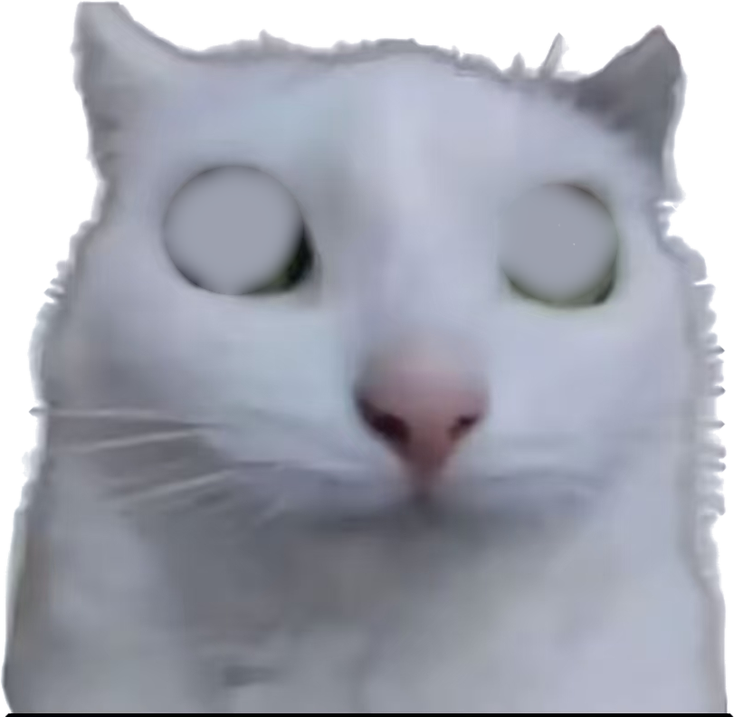
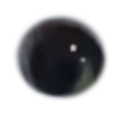
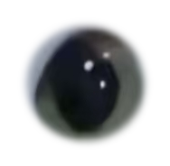

第 2 步 · 拆眼睛：眨眼的前提
这一步做完，一张静态图就有了「能单独动」的部件。 整个项目最关键的一招，就这一页。
先看懂三层素材
勾选/取消下面的框，你会看到：所谓「眨眼」，就是把眼睛贴片纵向压扁， 空出来的地方由底层的「皮」补上。



取消「皮」只剩两只眼睛；取消两只眼睛，就是一张没有眼睛的猫 —— 那就是眨眼时露出的底图。
为什么这样就能眨眼
- 皮：把眼睛那块用周围的毛「抹平」（不是涂白，是扩散补洞，见下）。
- 眼睛贴片：把眼睛连同外面一圈毛剪下来，边缘做羽化透明。
- 渲染时先画皮，再把贴片盖上去。贴片高度乘以
open，就是睁眼程度。
抹平用 Jacobi 扩散：只用洞外的像素，反复取四邻域平均，直到收敛。 边界颜色会自然往里延伸，所以补出来的是一块「像毛」的平面，不是一块色块。
量眼睛坐标
打开第 1 步用 --grid 出的网格图，读出眼球中心和半径：
左眼 cx=424 cy=581 rx=74 ry=68 右眼 cx=781 cy=595 rx=64 ry=62
这四个数就是眼睛外接椭圆的中心与半径。量歪 5 像素，贴片就会盖偏， 眨眼时脸上会露出一道边 —— 所以宁可多量两遍。
跑起来
python3 tools/split-sprite.py --src assets/lele-original.jpg --out /tmp/pet \
--seed 540,700 \
--eye-l 424,581,74,68 \
--eye-r 781,595,64,62 \
--preview产出四个文件，外加一份几何数据：
| 文件 | 是什么 |
|---|---|
pet.png | 抠好的整猫（备用 / 图标 / 兜底） |
pet-skin.png | 眼睛被抹平的「皮」 |
pet-eye-l.png | 左眼贴片 |
pet-eye-r.png | 右眼贴片 |
pet.json | 尺寸 + 眼睛几何，要抄进 JS |
验收：看那两格
--preview 的对照图有四格：抠图 / 皮+眼睛 / 眼睛压到 35% / 压到 10%。
后两格就是眨眼过程中的样子。
✅
合格
看起来像「眼皮慢慢合上」，缝里由毛补上，没有色块、没有黑边、没有明显的方块。
⛔
不合格就重做
露出一圈明显深色环 → 抹平的椭圆太大/太小；贴片位置偏 → 坐标量歪了。
别带着这个问题往下走，后面所有动画都建立在这两层素材上。
把几何抄进 JS
打开 pet.json，把这两个值填到代码顶部（第 3 步会用到）：
var SPRITE = { w: 811, h: 792 }; // ← size
var EYES = {
l: { box: [154, 156, 362, 352] }, // ← eyes.l.box
r: { box: [521, 176, 709, 360] } // ← eyes.r.box
};
var CHEEKS = [{ x: 186, y: 356, r: 96 }, { x: 672, y: 372, r: 92 }]; // 腮红位置，看着调💡
box 是裁切后的坐标
脚本已经帮你把「原图坐标」减掉了抠图时的裁切偏移。
自己手算很容易错，直接用
pet.json 里的值。
素材齐了。下一步开始画 —— 让它呼吸、被压扁还不悬空。